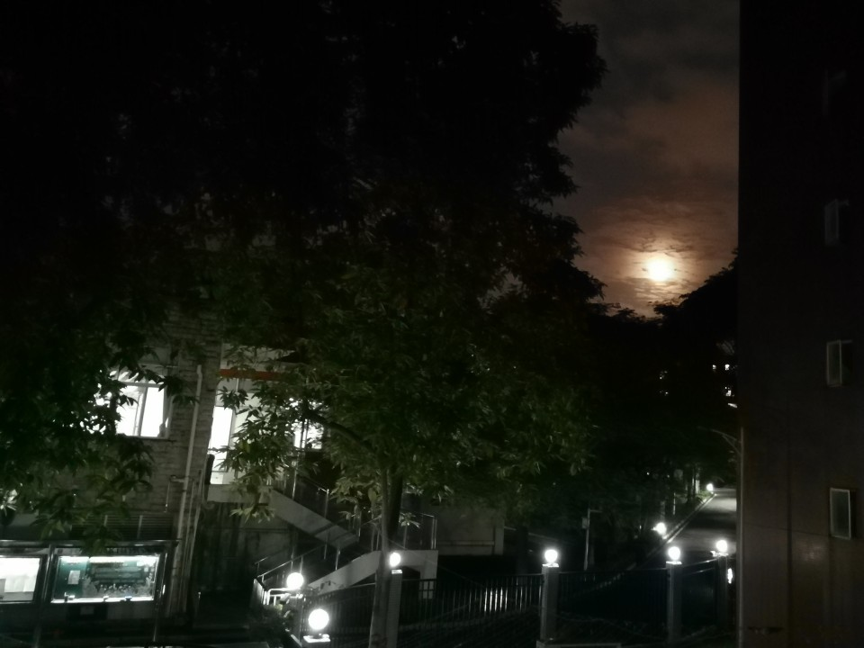
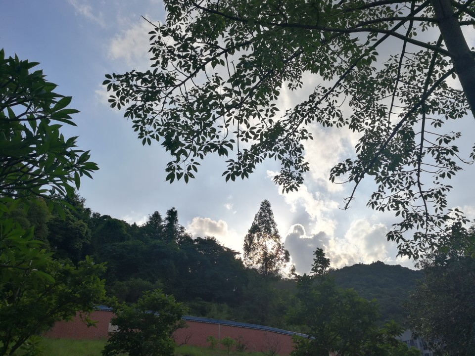
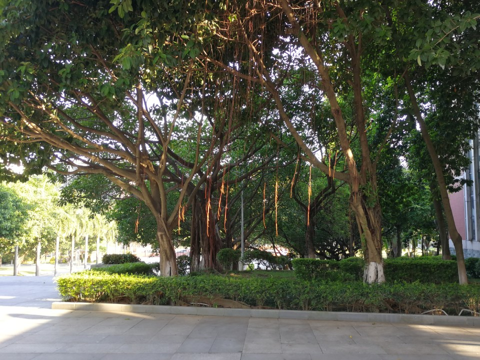
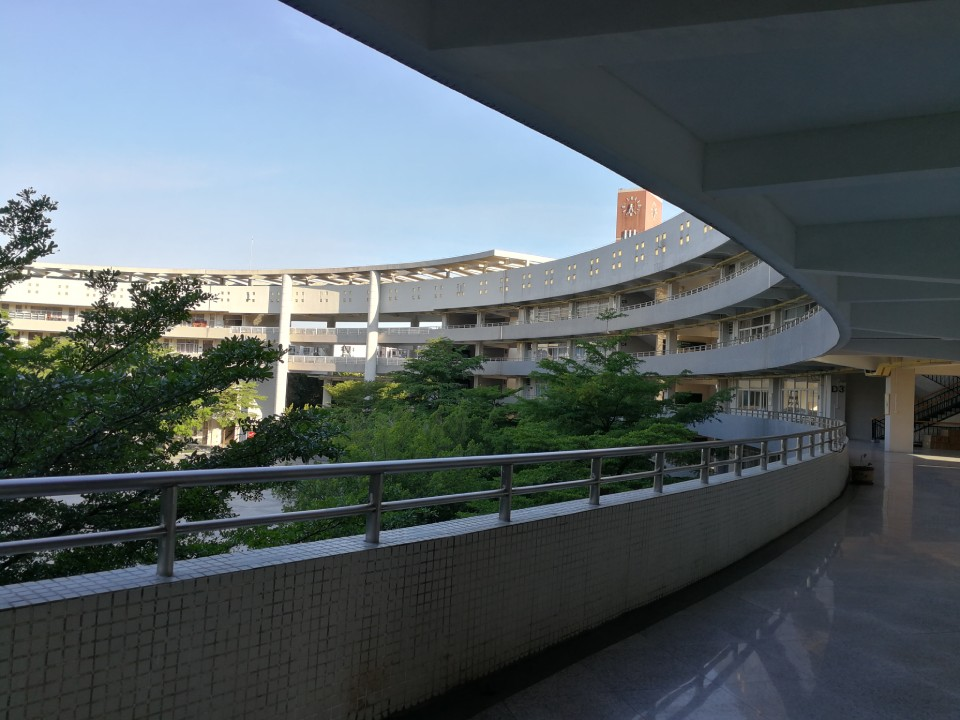
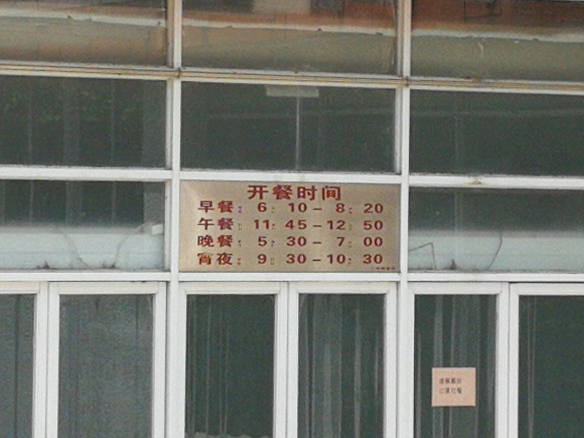
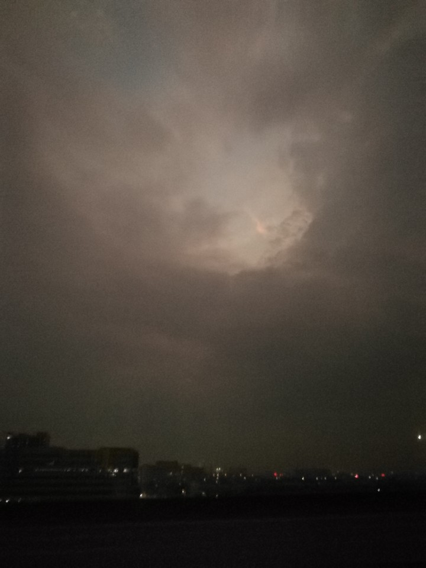

广州二中集训
这次集训从 7 月 3 日持续到 7 月 16 日。学业内容和平时区别不大，最宝贵的经历是集体生活。
去广州的飞机一排九座，没有遮光板，窗户透光率似乎是电控的。座椅背上能玩游戏，我发现我完全没有反应能力。
不知不觉跨过了北回归线，23.18°N，这里是热带！
地铁站和地铁内部很符合我对印度火车的想象，第一趟地铁过来我甚至挤不进去。可能是撞上晚高峰了，下飞机后花了两个小时才到学校。
布置寝室（又名“菊坡精舍”）有一堆事情。SKC 叫外卖，九点多了，我们在宿舍楼的连廊上吃。这时候我注意到头顶的管子上停着两个黑影，大概是麻雀。后来我几乎每晚都能看见它们，但是白天就是找不到。

寝室里手机几乎没信号，花洒是坏的，四个人才两个插座（也许本来住宿生不会有这么多用电需求）。别的寝室还有蟑螂、青蛙陪伴。
次日中午就被热带气候赏了个下马威。大概 12:30 的样子，只是阴天，天色还挺亮的，猝不及防就下暴雨，五分钟就停了。彼时我还在从食堂回宿舍的路上。回宿舍后开始洗衣服，我上初中后就没洗过了，洗得很慢。洗的时候又开始下小雨，可也只下了十几分钟。所幸之后一直没下雨，衣服能晾干。
整座学校建在山上，信号很差，生物多样性丰富。蛇我见过两次，蚊帐内侧会爬蜘蛛。还有一种长得像苍蝇但是大小刚好够穿过蚊帐网眼的虫子，完全没法对付，还好它们不烦人。


教学楼实验楼行政楼俱为一体，形成 C 字型，中间是个升国旗的大广场。这么大的建筑也是依山而建，于是会出现从地面爬一层楼梯才到一楼的情况。一条公路环绕校园，逛一圈就能摸清楚校园的布局。

食堂提供宵夜。广州二中允许学生带手机，但是每天都要穿校服。

住宿才知道小卖部的重要性。我还没在镇中小卖部消费过，在广二小卖部不得不消费了。
返程的经历太痛苦。原定航班受台风影响取消，应老师赶紧订了个 8:10 的飞机但是要去深圳。凌晨 3:35 就得起床，还在下雨（来的时候也下雨，首尾呼应）。迷迷糊糊地上了大巴去深圳。在大巴上看了日出又不完全看了，因为下雨看不到太阳。
